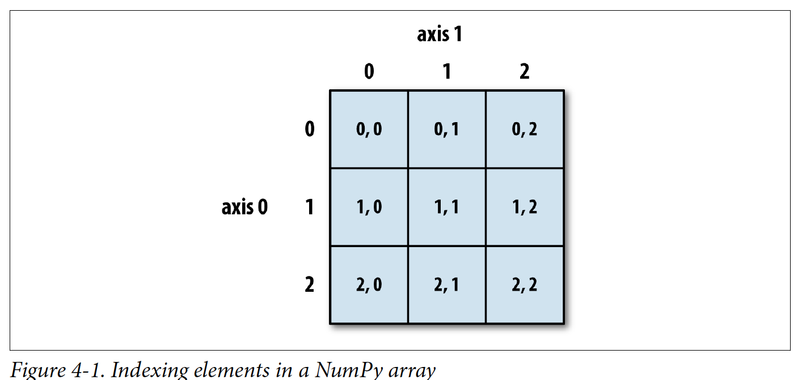
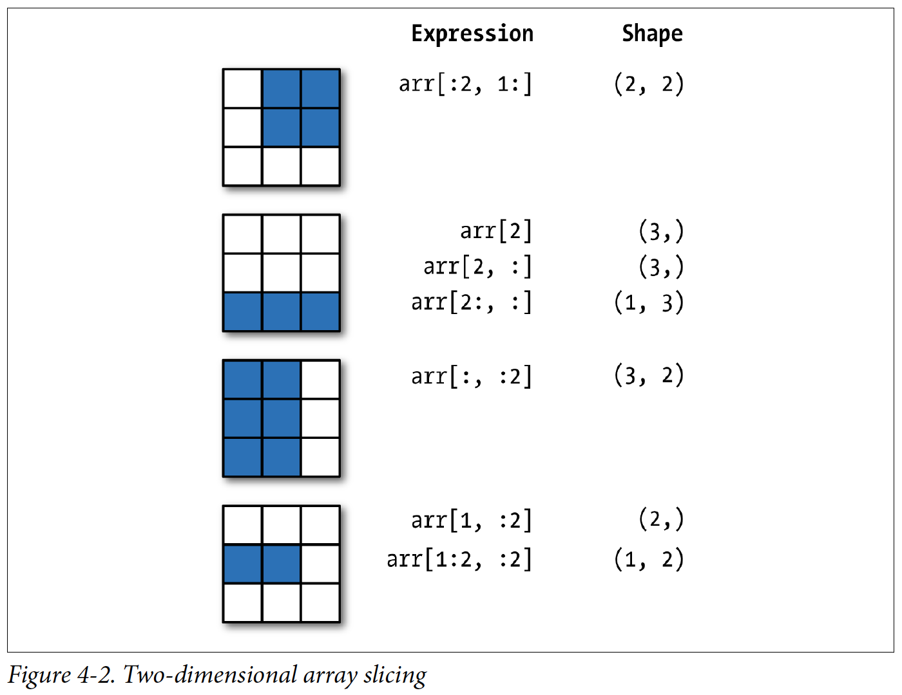

4.1 Data Wrangling and Advanced Indexing¶
Goal: Build data wrangling skills to clean and navigate datasets.
Outline:
Numpy Array and DataFrame methods and functions
Table indexing and slicing
Boolean (logical) indexing
Sorting
Data cleaning and inspection
Additional Required Reading: Functions¶
Data 8 textbook “Computational and Inferential Thinking: The Foundations of Data Science” By Ani Adhikari and John DeNero Chapter 8 Functions and Tables. This should overlap with your assigned reading for Data 8.
Numpy Arrays and DataFrames¶
NumPy and Pandas offer several types of data structures, the two main structures that we use are nparray and DataFrame. A nparray is a fast and flexible container for large datasets that allows you to perform operations on whole blocks of data at once. nparrays are best suited for homogenous (just one type) numerical data. DataFrames are designed for tabular datasets, and can handle heterogenous data (multiple types: int, float, string, etc.).
import numpy as np
import pandas as pd
nparray¶
Here is an example of a nparray with random float data:
# Generate a random nparray called arr_data
arr_data = np.random.randn(5,3)
arr_data
array([[ 0.32428364, -0.55500446, -0.25629338],
[ 0.56929162, -0.10939115, 1.59400057],
[-0.03347389, -0.44992174, 1.63620386],
[ 0.80918572, 0.6342056 , 0.48323864],
[ 2.56625492, 0.5706423 , -0.60574873]])
The function arrayName.shape is useful for finding the number of rows and columns in an array.
# use .shape to determine the shape of arr_data
arr_data.shape
(5, 3)
arrayName.dtype will display the data type of the data stored in the array.
# use .dtype to determine the type of arr_data
arr_data.dtype
dtype('float64')
The functions np.zeros and np.ones are similar, they create arrays full of zeros and ones respectively. The input for these functions is the shape of the array you want. This is an effective way of setting up an array of place-holders that you can then fill in with a loop or to make an array of a single value.
# Generate a nparray of zeros with np.zeros
arr0 = np.zeros((4,4))
arr0
array([[0., 0., 0., 0.],
[0., 0., 0., 0.],
[0., 0., 0., 0.],
[0., 0., 0., 0.]])
# Generate a nparray of ones with np.ones
arr1 = np.ones((4,4))
arr1
array([[1., 1., 1., 1.],
[1., 1., 1., 1.],
[1., 1., 1., 1.],
[1., 1., 1., 1.]])
# np.ones is handy for making a nparray of any single value
arr5 = arr1 * 5
arr5
array([[5., 5., 5., 5.],
[5., 5., 5., 5.],
[5., 5., 5., 5.],
[5., 5., 5., 5.]])
The functions np.arange and np.linspace can be used to make monotonic number lines. They are really useful! np.arange makes an array of integers or floats between the starting and ending (note that the ending point is exclusive) in steps that you set as inputs. np.linspace will make evenly spaced float points between the starting and ending (note that the ending point is inclusive) you set.
# Generate an array of integers between 0 and 10 in steps of 1, including 0 (start) but not 11 (end)
arr2 = np.arange(0,11,1)
arr2
array([ 0, 1, 2, 3, 4, 5, 6, 7, 8, 9, 10])
# Generate an array of floats between 0 and 10 in steps of 2, including 0 (start) but not 11 (end)
arr2 = np.arange(0.0,11.0,2.0)
arr2
array([ 0., 2., 4., 6., 8., 10.])
# Generate an array of 14 evenly spaced numbers between 0 and 10, including 0 (start) and 10 (end).
arr3=np.linspace(0,10,14)
arr3
array([ 0. , 0.76923077, 1.53846154, 2.30769231, 3.07692308,
3.84615385, 4.61538462, 5.38461538, 6.15384615, 6.92307692,
7.69230769, 8.46153846, 9.23076923, 10. ])
DataFrames¶
Series and DataFrames are like nparrays but they have the added feature of index labels assigned to each row and column – the bold labels in the below DataFrame. These labels can be used to bin and select data.
# generate a new DataFrame
# note that index values (like the column labels) don't have to integers and don't have to be in order
frame = pd.DataFrame(np.random.rand(3, 3), index=['Nevada','Montana','Arizona'], columns=['sedimentary','igneous','metamorphic'])
frame
| sedimentary | igneous | metamorphic | |
|---|---|---|---|
| Nevada | 0.199461 | 0.912377 | 0.888141 |
| Montana | 0.136929 | 0.651929 | 0.588123 |
| Arizona | 0.083090 | 0.419021 | 0.304917 |
We’ve seen DataFrame structures before in our tabular data files. The Earthquake catalog we were dealing with last week was a .csv (Comma Separated Variable) data file of all the earthquakes. We imported it as a DataFrame from the USGS API by setting up a query URL and using pd.read_csv. This time we’ll look at the earthquakes of magnitude 2.5 and greater from the past week.
start_day = '2020-09-07'
end_day = '2020-09-14'
standard_url = 'https://earthquake.usgs.gov/fdsnws/event/1/query?format=csv&orderby=magnitude'
query_url = standard_url + '&starttime=' + start_day + '&endtime=' + end_day + '&minmagnitude=2.5'
EQ_data = pd.read_csv(query_url)
EQ_data .head()
| time | latitude | longitude | depth | mag | magType | nst | gap | dmin | rms | ... | updated | place | type | horizontalError | depthError | magError | magNst | status | locationSource | magSource | |
|---|---|---|---|---|---|---|---|---|---|---|---|---|---|---|---|---|---|---|---|---|---|
| 0 | 2020-09-11T07:35:57.195Z | -21.3957 | -69.9093 | 51.0 | 6.2 | mww | NaN | 72.0 | 0.076 | 0.87 | ... | 2020-10-06T15:10:12.394Z | 82 km NNE of Tocopilla, Chile | earthquake | 6.3 | 1.9 | 0.071 | 19.0 | reviewed | us | us |
| 1 | 2020-09-12T02:44:11.238Z | 38.7513 | 142.2499 | 34.0 | 6.1 | mww | NaN | 47.0 | 2.231 | 1.01 | ... | 2020-10-09T02:24:36.695Z | 58 km SE of Ōfunato, Japan | earthquake | 6.4 | 1.8 | 0.057 | 30.0 | reviewed | us | us |
| 2 | 2020-09-07T06:12:39.710Z | -17.1086 | 168.4935 | 10.0 | 6.0 | mww | NaN | 41.0 | 2.065 | 1.13 | ... | 2020-10-04T13:09:52.650Z | 72 km NNE of Port-Vila, Vanuatu | earthquake | 6.9 | 1.8 | 0.098 | 10.0 | reviewed | us | us |
| 3 | 2020-09-08T00:45:20.801Z | -4.8828 | 129.7559 | 172.0 | 5.9 | mww | NaN | 13.0 | 3.160 | 0.81 | ... | 2020-10-16T03:46:51.330Z | 194 km SSE of Amahai, Indonesia | earthquake | 6.5 | 1.8 | 0.086 | 13.0 | reviewed | us | us |
| 4 | 2020-09-12T08:34:27.322Z | -17.2576 | 167.6786 | 10.0 | 5.9 | mww | NaN | 64.0 | 1.857 | 0.70 | ... | 2020-09-25T12:11:10.835Z | 85 km NW of Port-Vila, Vanuatu | earthquake | 6.0 | 1.9 | 0.043 | 51.0 | reviewed | us | us |
5 rows × 22 columns
We have seen referencing individual columns (which are called Series) with: DataFrame['Column_Name'].
EQ_data['depth']
0 51.00
1 34.00
2 10.00
3 172.00
4 10.00
...
445 36.40
446 1.87
447 25.60
448 6.90
449 24.04
Name: depth, Length: 450, dtype: float64
The .values function can be used to return the values of the Series as a nparray, so without the labled index values of the Series.
print(type(EQ_data['depth']))
<class 'pandas.core.series.Series'>
EQ_data['depth'].values
array([5.1000e+01, 3.4000e+01, 1.0000e+01, 1.7200e+02, 1.0000e+01,
1.7000e+01, 1.0000e+01, 1.0000e+01, 5.5855e+02, 3.5000e+01,
6.1860e+01, 4.1170e+01, 1.0000e+01, 3.1524e+02, 1.3872e+02,
1.0000e+01, 1.3604e+02, 1.0000e+01, 1.0000e+01, 5.7700e+01,
1.0000e+01, 1.3161e+02, 1.0000e+01, 1.0000e+01, 3.4080e+01,
1.0000e+01, 1.2575e+02, 1.4900e+01, 1.0000e+01, 1.0125e+02,
7.3140e+01, 1.0000e+01, 3.5000e+01, 1.0000e+01, 1.0000e+01,
1.0000e+01, 1.0000e+01, 1.0000e+01, 1.0000e+01, 6.0190e+01,
1.0956e+02, 1.3670e+01, 4.1180e+01, 2.4900e+01, 1.0000e+01,
9.1090e+01, 1.0000e+01, 1.0000e+01, 4.1160e+01, 4.6839e+02,
1.0000e+01, 1.0000e+01, 1.1292e+02, 1.0000e+01, 1.0000e+01,
9.7600e+00, 1.0000e+01, 1.0000e+01, 1.0000e+01, 6.9820e+01,
1.0000e+01, 8.4110e+01, 1.0000e+01, 1.0000e+01, 5.9790e+01,
1.0000e+01, 1.5297e+02, 1.0000e+01, 1.0000e+01, 1.0000e+01,
1.0000e+01, 1.0470e+01, 5.3357e+02, 1.0000e+01, 7.7610e+01,
1.0000e+01, 1.0000e+01, 1.0000e+01, 1.2395e+02, 7.6540e+01,
3.5000e+01, 1.4690e+01, 1.4010e+01, 1.0000e+01, 4.3440e+01,
1.0000e+01, 1.0000e+01, 1.0000e+01, 1.0000e+01, 1.0000e+01,
2.1316e+02, 7.4360e+01, 1.0000e+01, 1.6725e+02, 5.3140e+01,
3.5000e+01, 1.0000e+01, 2.5090e+01, 1.0000e+01, 9.2920e+01,
4.2340e+01, 1.0000e+01, 1.3016e+02, 1.0000e+01, 4.8605e+02,
4.4920e+01, 1.0000e+01, 1.0479e+02, 2.3725e+02, 4.5090e+01,
5.1830e+01, 1.0000e+01, 1.0000e+01, 7.4550e+01, 4.3770e+01,
3.5000e+01, 2.0400e+01, 1.4044e+02, 1.0000e+01, 1.0000e+01,
1.0000e+01, 4.3980e+01, 1.6290e+01, 3.5000e+01, 2.9330e+01,
1.0000e+01, 1.0000e+01, 1.0000e+01, 1.0000e+01, 1.0000e+01,
2.5010e+01, 1.8181e+02, 1.0000e+01, 6.4550e+01, 6.5040e+01,
2.1120e+01, 1.0000e+01, 8.6100e+01, 1.8800e+02, 9.0490e+01,
1.0000e+01, 1.0000e+01, 1.9503e+02, 1.0000e+01, 1.0000e+01,
1.1536e+02, 1.0000e+01, 3.7721e+02, 6.3670e+01, 7.8550e+01,
5.1430e+01, 4.6310e+01, 2.4226e+02, 4.5660e+01, 1.0000e+01,
1.5310e+02, 1.3880e+01, 8.8000e+00, 2.6320e+01, 1.0000e+01,
6.5570e+01, 4.0000e+01, 3.5000e+01, 5.3160e+01, 9.4700e+00,
2.7230e+01, 1.0000e+01, 6.0520e+02, 1.5339e+02, 1.0000e+01,
1.0000e+01, 4.0940e+01, 1.0000e+01, 5.4030e+01, 1.0000e+01,
1.7864e+02, 1.0000e+01, 6.7050e+01, 1.2725e+02, 1.3770e+01,
1.2202e+02, 1.0000e+01, 4.2770e+01, 1.0862e+02, 1.0000e+01,
1.2170e+02, 1.0000e+01, 4.9036e+02, 7.1140e+01, 4.0090e+01,
3.7430e+01, 2.4580e+01, 6.4040e+01, 9.3300e+00, 5.2798e+02,
3.9300e+00, 1.0000e+01, 4.0810e+01, 2.7372e+02, 1.0000e+01,
1.0000e+01, 1.0000e+01, 1.0000e+01, 4.8460e+01, 1.0000e+01,
1.0000e+01, 2.1000e+00, 1.2016e+02, 5.3610e+01, 6.8400e+01,
6.8540e+01, 2.1260e+02, 1.6893e+02, 1.7110e+02, 3.6050e+01,
4.8255e+02, 5.3150e+01, 1.0000e+01, 3.1160e+01, 4.2540e+01,
3.6170e+01, 6.2320e+01, 1.0073e+02, 1.1993e+02, 1.0000e+01,
1.1844e+02, 1.7430e+01, 1.0000e+01, 6.1590e+01, 6.3150e+01,
1.8810e+01, 1.5361e+02, 9.2860e+01, 4.8296e+02, 7.6560e+01,
8.1920e+01, 1.0000e+01, 3.8190e+01, 1.0000e+01, 5.3973e+02,
5.0372e+02, 5.9451e+02, 5.3977e+02, 8.8560e+01, 1.0000e+01,
5.4350e+01, 3.0500e+01, 3.5000e+01, 1.0000e+01, 1.8704e+02,
1.0000e+01, 3.1700e+01, 2.1725e+02, 1.9963e+02, 2.3488e+02,
1.4845e+02, 4.6990e+01, 1.0000e+01, 8.0770e+01, 1.0000e+01,
3.8000e+01, 3.7000e+01, 5.0000e+00, 6.0000e+01, 3.3000e+01,
3.8000e+01, 3.7000e+01, 7.0890e+01, 1.0000e+01, 1.0400e+01,
3.7000e+00, 3.2600e+01, 2.0000e+01, 1.2900e+02, 4.5000e+01,
1.0100e+01, 3.5000e+01, 2.6500e+01, 1.8000e+00, 1.6790e+01,
2.6870e+01, 3.4700e+01, 4.0000e+00, 5.0000e+00, 6.0000e+00,
1.3000e+01, 1.1000e+01, 1.1000e+01, 2.3400e+00, 2.5110e+01,
3.6400e+01, 1.0000e+01, 1.2000e+01, 5.3000e+01, 1.3000e+01,
8.3100e+01, 1.3110e+01, 1.4648e+02, 3.5000e+01, 1.1780e+01,
1.5880e+01, 1.3000e+01, 6.0000e+00, 1.1000e+01, 1.4000e+01,
1.5530e+01, 5.6100e+00, 5.0000e+00, 8.4880e+01, 2.4840e+01,
3.2940e+01, 1.1000e+01, 6.0000e+00, 1.1000e+01, 1.3000e+01,
5.0000e+00, 1.0000e+01, 1.0000e+01, 1.0000e+01, 1.0000e+01,
1.0000e+01, 1.4638e+02, 1.0000e+01, 1.4429e+02, 1.0000e+01,
9.0000e+00, 1.2000e+01, 6.8300e+00, 1.3000e+01, 8.0000e+00,
1.0000e+01, 1.3790e+01, 1.1000e+01, 1.2000e+01, 2.3490e+01,
8.0000e+00, 2.0370e+01, 9.0000e+00, 1.0000e+01, 1.0000e+01,
1.3727e+02, 1.4000e+01, 3.6500e+01, 1.4700e+01, 7.6770e+01,
2.5080e+01, 7.4110e+01, 1.0000e+01, 1.0000e+01, 1.0000e+01,
1.1000e+01, 5.5900e+00, 1.1000e+01, 1.4000e+01, 1.8800e+00,
3.1000e+00, 6.9600e+01, 1.4100e+01, 1.0000e+01, 1.0000e+01,
1.7800e+01, 3.5200e+01, 5.4000e-01, 4.5300e+01, 1.4000e+00,
1.0000e+01, 1.5000e+01, 1.8000e+01, 6.3500e+00, 6.9700e+00,
1.0000e+01, 9.0000e+00, 1.8000e+01, 6.7800e+00, 1.5597e+02,
1.0000e+01, 5.0000e+00, 9.1100e+01, 4.7000e+00, 2.4100e+00,
3.7000e+00, 3.5000e+01, 1.2240e+01, 1.2050e+02, 2.5680e+01,
2.5570e+01, 3.2240e+01, 3.7300e+00, 1.8900e+00, 4.4100e+00,
1.4000e+01, 1.1000e+01, 9.0000e+00, 1.3000e+01, 1.0000e+01,
2.1000e+01, 1.0000e+01, 6.9800e+00, 1.0000e+01, 1.1900e+00,
9.0000e+00, 1.2000e+01, 1.4000e+01, 7.5000e+00, 2.6670e+01,
5.3600e+01, 4.5690e+01, 5.6910e+01, 3.0810e+01, 1.6000e+01,
1.2670e+01, 3.5000e+01, 5.3000e+00, 1.0000e+01, 3.9500e+01,
1.4120e+01, 9.1000e+01, 6.0000e+00, 1.6246e+02, 1.0000e+01,
9.9300e+00, 3.9500e+00, 1.1000e+01, 2.2000e+01, 6.7500e+00,
1.1000e+01, 6.0000e+00, 1.2000e+00, 1.1000e+01, 1.3000e+01,
1.2000e+01, 3.2310e+01, 6.0000e+00, 1.6000e+01, 3.2800e+01,
1.3000e+01, 1.2400e+01, 1.0000e+01, 1.1087e+02, 4.5600e+01,
1.0040e+01, 1.0000e+01, 1.0080e+02, 1.9600e+01, 1.0210e+02,
3.6400e+01, 1.8700e+00, 2.5600e+01, 6.9000e+00, 2.4040e+01])
type(EQ_data['depth'].values)
numpy.ndarray
Indexing and Slicing¶
Arrays and dataframes have two axes of indices, rows and columns. Remember that python indexing starts at zero, and the end bounds are generally exclusive.

Source: Python for Data Analysis (2nd Edition) McKinney, W.
Using square brackes we can select subsections of tables to work with:

Source: Python for Data Analysis (2nd Edition) McKinney, W.
# generate a random array
arr_data = np.random.randn(10,5)
arr_data
array([[ 0.81754438, 0.91393209, -0.4487882 , 0.80454802, 0.44759173],
[-0.57767662, -0.64403016, -1.54506726, 0.86178217, -0.55896685],
[-2.14238793, -0.25371033, 1.50639513, 0.68254049, -0.30718592],
[ 1.46776856, -0.24136265, -0.48688375, 0.38256298, -0.43651208],
[-1.65611276, -0.37665776, 2.04925885, -0.22500866, 0.82196879],
[ 0.18077164, 1.11495048, -0.04314898, -1.59601628, -0.07349549],
[ 1.28846137, -0.46188748, 0.09898746, -1.48897823, -0.59778333],
[-1.37876487, 0.03332876, 0.72844834, 1.46940819, -0.51039034],
[-2.17349129, 1.25374196, 0.97765265, 0.17731497, 1.20159021],
[-0.70399318, -0.1014309 , 0.44195098, 0.55195368, -1.24028406]])
slice out the first 3 rows of arr_data
a = arr_data[:3]
a
array([[ 0.81754438, 0.91393209, -0.4487882 , 0.80454802, 0.44759173],
[-0.57767662, -0.64403016, -1.54506726, 0.86178217, -0.55896685],
[-2.14238793, -0.25371033, 1.50639513, 0.68254049, -0.30718592]])
slice out the last 2 columns of arr_data
b = arr_data[:,-2:]
b
array([[ 0.80454802, 0.44759173],
[ 0.86178217, -0.55896685],
[ 0.68254049, -0.30718592],
[ 0.38256298, -0.43651208],
[-0.22500866, 0.82196879],
[-1.59601628, -0.07349549],
[-1.48897823, -0.59778333],
[ 1.46940819, -0.51039034],
[ 0.17731497, 1.20159021],
[ 0.55195368, -1.24028406]])
#Or this works too
b = arr_data[:,3:]
b
array([[ 0.80454802, 0.44759173],
[ 0.86178217, -0.55896685],
[ 0.68254049, -0.30718592],
[ 0.38256298, -0.43651208],
[-0.22500866, 0.82196879],
[-1.59601628, -0.07349549],
[-1.48897823, -0.59778333],
[ 1.46940819, -0.51039034],
[ 0.17731497, 1.20159021],
[ 0.55195368, -1.24028406]])
Slicing a DataFrame is a bit different because you can reference the index labels and use .iloc.
slice out the first 10 rows of EQ_data
EQ_data.iloc[:10]
| time | latitude | longitude | depth | mag | magType | nst | gap | dmin | rms | ... | updated | place | type | horizontalError | depthError | magError | magNst | status | locationSource | magSource | |
|---|---|---|---|---|---|---|---|---|---|---|---|---|---|---|---|---|---|---|---|---|---|
| 0 | 2020-09-11T07:35:57.195Z | -21.3957 | -69.9093 | 51.00 | 6.2 | mww | NaN | 72.0 | 0.076 | 0.87 | ... | 2020-10-06T15:10:12.394Z | 82 km NNE of Tocopilla, Chile | earthquake | 6.3 | 1.9 | 0.071 | 19.0 | reviewed | us | us |
| 1 | 2020-09-12T02:44:11.238Z | 38.7513 | 142.2499 | 34.00 | 6.1 | mww | NaN | 47.0 | 2.231 | 1.01 | ... | 2020-10-09T02:24:36.695Z | 58 km SE of Ōfunato, Japan | earthquake | 6.4 | 1.8 | 0.057 | 30.0 | reviewed | us | us |
| 2 | 2020-09-07T06:12:39.710Z | -17.1086 | 168.4935 | 10.00 | 6.0 | mww | NaN | 41.0 | 2.065 | 1.13 | ... | 2020-10-04T13:09:52.650Z | 72 km NNE of Port-Vila, Vanuatu | earthquake | 6.9 | 1.8 | 0.098 | 10.0 | reviewed | us | us |
| 3 | 2020-09-08T00:45:20.801Z | -4.8828 | 129.7559 | 172.00 | 5.9 | mww | NaN | 13.0 | 3.160 | 0.81 | ... | 2020-10-16T03:46:51.330Z | 194 km SSE of Amahai, Indonesia | earthquake | 6.5 | 1.8 | 0.086 | 13.0 | reviewed | us | us |
| 4 | 2020-09-12T08:34:27.322Z | -17.2576 | 167.6786 | 10.00 | 5.9 | mww | NaN | 64.0 | 1.857 | 0.70 | ... | 2020-09-25T12:11:10.835Z | 85 km NW of Port-Vila, Vanuatu | earthquake | 6.0 | 1.9 | 0.043 | 51.0 | reviewed | us | us |
| 5 | 2020-09-09T07:18:40.225Z | 4.1837 | 126.6366 | 17.00 | 5.8 | mww | NaN | 32.0 | 3.054 | 1.19 | ... | 2020-10-14T12:00:11.031Z | 187 km SE of Sarangani, Philippines | earthquake | 6.9 | 1.7 | 0.053 | 34.0 | reviewed | us | us |
| 6 | 2020-09-07T06:29:14.938Z | -17.1622 | 168.5076 | 10.00 | 5.7 | mww | NaN | 41.0 | 2.116 | 0.83 | ... | 2020-10-04T09:05:11.136Z | 66 km NNE of Port-Vila, Vanuatu | earthquake | 7.0 | 1.8 | 0.050 | 38.0 | reviewed | us | us |
| 7 | 2020-09-07T17:40:44.171Z | -24.5120 | -111.9898 | 10.00 | 5.6 | mww | NaN | 34.0 | 3.500 | 1.10 | ... | 2020-09-11T16:20:37.144Z | Easter Island region | earthquake | 10.2 | 1.8 | 0.066 | 22.0 | reviewed | us | us |
| 8 | 2020-09-12T02:37:29.824Z | -17.8709 | -178.0097 | 558.55 | 5.6 | mww | NaN | 36.0 | 3.544 | 1.07 | ... | 2020-10-09T02:02:00.290Z | Fiji region | earthquake | 9.6 | 5.3 | 0.093 | 11.0 | reviewed | us | us |
| 9 | 2020-09-09T03:41:18.641Z | 4.1712 | 126.7330 | 35.00 | 5.4 | mww | NaN | 47.0 | 3.100 | 0.96 | ... | 2020-09-10T03:44:21.006Z | 195 km SE of Sarangani, Philippines | earthquake | 7.5 | 1.9 | 0.080 | 15.0 | reviewed | us | us |
10 rows × 22 columns
slice out the a chunk of depths starting at index 5 and up to (but excluding) index 10
EQ_data.iloc[5:10]['depth']
5 17.00
6 10.00
7 10.00
8 558.55
9 35.00
Name: depth, dtype: float64
Notice that this is still a Series with corresponding index values. If you just want the values from that chunk and not the index labels use .values.
EQ_data.iloc[5:10]['depth'].values
array([ 17. , 10. , 10. , 558.55, 35. ])
Boolean Indexing¶
We can use Boolean (i.e. logical) indexing to select values from our DataFrame where the argument we want is True. You’ll use the logical symbols (<,>,==,&,|,~).
Use Boolean Indexing to filter out data so that we are only looking at rows with magnitudes larger than or equal to 6.0
EQ_data[EQ_data['mag']>=6.0]
| time | latitude | longitude | depth | mag | magType | nst | gap | dmin | rms | ... | updated | place | type | horizontalError | depthError | magError | magNst | status | locationSource | magSource | |
|---|---|---|---|---|---|---|---|---|---|---|---|---|---|---|---|---|---|---|---|---|---|
| 0 | 2020-09-11T07:35:57.195Z | -21.3957 | -69.9093 | 51.0 | 6.2 | mww | NaN | 72.0 | 0.076 | 0.87 | ... | 2020-10-06T15:10:12.394Z | 82 km NNE of Tocopilla, Chile | earthquake | 6.3 | 1.9 | 0.071 | 19.0 | reviewed | us | us |
| 1 | 2020-09-12T02:44:11.238Z | 38.7513 | 142.2499 | 34.0 | 6.1 | mww | NaN | 47.0 | 2.231 | 1.01 | ... | 2020-10-09T02:24:36.695Z | 58 km SE of Ōfunato, Japan | earthquake | 6.4 | 1.8 | 0.057 | 30.0 | reviewed | us | us |
| 2 | 2020-09-07T06:12:39.710Z | -17.1086 | 168.4935 | 10.0 | 6.0 | mww | NaN | 41.0 | 2.065 | 1.13 | ... | 2020-10-04T13:09:52.650Z | 72 km NNE of Port-Vila, Vanuatu | earthquake | 6.9 | 1.8 | 0.098 | 10.0 | reviewed | us | us |
3 rows × 22 columns
Sorting¶
DataFrames can be sorted by the values in a given column (.sort_values).
EQ_data.sort_values(by=['depth']).head()
| time | latitude | longitude | depth | mag | magType | nst | gap | dmin | rms | ... | updated | place | type | horizontalError | depthError | magError | magNst | status | locationSource | magSource | |
|---|---|---|---|---|---|---|---|---|---|---|---|---|---|---|---|---|---|---|---|---|---|
| 362 | 2020-09-10T12:09:31.800Z | 44.322333 | -110.520833 | 0.54 | 2.80 | md | 10.0 | 118.00 | 0.05854 | 0.2700 | ... | 2020-10-13T08:05:06.040Z | 59 km SE of West Yellowstone, Montana | earthquake | 0.82 | 0.40 | 0.200 | 4.0 | reviewed | uu | uu |
| 399 | 2020-09-10T18:33:51.740Z | 44.333333 | -110.505500 | 1.19 | 2.62 | ml | 17.0 | 125.00 | 0.07115 | 0.1800 | ... | 2020-09-10T19:12:59.040Z | 60 km SE of West Yellowstone, Montana | earthquake | 0.57 | 0.50 | 0.264 | 8.0 | reviewed | uu | uu |
| 427 | 2020-09-10T11:40:22.540Z | 44.320333 | -110.497000 | 1.20 | 2.56 | ml | 19.0 | 134.00 | 0.06052 | 0.2100 | ... | 2020-09-10T17:43:55.390Z | 61 km SE of West Yellowstone, Montana | earthquake | 0.83 | 0.73 | 0.321 | 8.0 | reviewed | uu | uu |
| 364 | 2020-09-11T05:16:42.570Z | 54.319300 | -160.875200 | 1.40 | 2.80 | ml | NaN | 209.00 | 0.90700 | 0.6000 | ... | 2020-09-25T07:35:41.040Z | 115 km SSW of Sand Point, Alaska | earthquake | 4.70 | 9.70 | 0.085 | 18.0 | reviewed | us | us |
| 278 | 2020-09-08T12:35:17.384Z | 38.149700 | -118.038300 | 1.80 | 3.50 | ml | 33.0 | 42.76 | 0.01500 | 0.1369 | ... | 2020-10-05T10:45:37.040Z | 27 km SSE of Mina, Nevada | earthquake | NaN | 0.40 | 0.360 | 18.0 | reviewed | nn | nn |
5 rows × 22 columns
You can reverse the order of sorting with ascending=False.
EQ_data.sort_values(by=['depth'],ascending=False).head()
| time | latitude | longitude | depth | mag | magType | nst | gap | dmin | rms | ... | updated | place | type | horizontalError | depthError | magError | magNst | status | locationSource | magSource | |
|---|---|---|---|---|---|---|---|---|---|---|---|---|---|---|---|---|---|---|---|---|---|
| 167 | 2020-09-07T22:22:20.306Z | -20.8541 | -178.6937 | 605.20 | 4.3 | mb | NaN | 115.0 | 4.359 | 0.82 | ... | 2020-09-14T04:12:05.040Z | Fiji region | earthquake | 14.9 | 8.6 | 0.116 | 21.0 | reviewed | us | us |
| 241 | 2020-09-13T03:50:49.167Z | -21.8264 | -179.4210 | 594.51 | 4.1 | mb | NaN | 112.0 | 4.705 | 0.73 | ... | 2020-09-18T01:50:13.040Z | Fiji region | earthquake | 12.9 | 8.5 | 0.115 | 21.0 | reviewed | us | us |
| 8 | 2020-09-12T02:37:29.824Z | -17.8709 | -178.0097 | 558.55 | 5.6 | mww | NaN | 36.0 | 3.544 | 1.07 | ... | 2020-10-09T02:02:00.290Z | Fiji region | earthquake | 9.6 | 5.3 | 0.093 | 11.0 | reviewed | us | us |
| 242 | 2020-09-13T04:05:14.608Z | 6.0551 | 123.8095 | 539.77 | 4.1 | mb | NaN | 76.0 | 2.026 | 0.63 | ... | 2020-10-09T03:37:13.040Z | 45 km WSW of Palimbang, Philippines | earthquake | 15.9 | 14.2 | 0.198 | 7.0 | reviewed | us | us |
| 239 | 2020-09-11T04:25:44.407Z | 5.9988 | 123.8244 | 539.73 | 4.1 | mb | NaN | 107.0 | 5.726 | 0.43 | ... | 2020-10-09T01:07:48.040Z | 46 km WSW of Palimbang, Philippines | earthquake | 11.7 | 11.8 | 0.126 | 17.0 | reviewed | us | us |
5 rows × 22 columns
Data cleaning and inspection¶
.drop() can be used to drop whole columns from a DataFrame.
EQ_data_concise = EQ_data.drop(['magType','nst','gap','dmin','rms','net','id','updated','place','type','horizontalError','depthError','magError','magNst','status','locationSource','magSource',], axis='columns')
EQ_data_concise.head()
| time | latitude | longitude | depth | mag | |
|---|---|---|---|---|---|
| 0 | 2020-09-11T07:35:57.195Z | -21.3957 | -69.9093 | 51.0 | 6.2 |
| 1 | 2020-09-12T02:44:11.238Z | 38.7513 | 142.2499 | 34.0 | 6.1 |
| 2 | 2020-09-07T06:12:39.710Z | -17.1086 | 168.4935 | 10.0 | 6.0 |
| 3 | 2020-09-08T00:45:20.801Z | -4.8828 | 129.7559 | 172.0 | 5.9 |
| 4 | 2020-09-12T08:34:27.322Z | -17.2576 | 167.6786 | 10.0 | 5.9 |
.unique() returns the unique values from the specified object.
unique_mags = EQ_data_concise['mag'].unique()
unique_mags.sort()
unique_mags
array([2.5 , 2.51, 2.53, 2.54, 2.55, 2.56, 2.57, 2.58, 2.6 , 2.61, 2.62,
2.63, 2.64, 2.65, 2.66, 2.68, 2.69, 2.7 , 2.74, 2.75, 2.76, 2.77,
2.78, 2.79, 2.8 , 2.81, 2.82, 2.84, 2.86, 2.9 , 2.91, 2.92, 2.95,
2.96, 2.97, 2.98, 2.99, 3. , 3.01, 3.02, 3.03, 3.06, 3.1 , 3.17,
3.18, 3.2 , 3.21, 3.23, 3.26, 3.3 , 3.32, 3.34, 3.42, 3.43, 3.44,
3.46, 3.5 , 3.53, 3.59, 3.6 , 3.7 , 3.71, 3.72, 3.74, 3.75, 3.8 ,
3.83, 3.9 , 4. , 4.1 , 4.2 , 4.22, 4.3 , 4.33, 4.36, 4.4 , 4.5 ,
4.6 , 4.7 , 4.8 , 4.9 , 5. , 5.1 , 5.2 , 5.3 , 5.4 , 5.6 , 5.7 ,
5.8 , 5.9 , 6. , 6.1 , 6.2 ])
.value_counts() returns the count of each unique value from the specified object. This functionality can be used to find duplicate values.
EQ_data_concise['mag'].value_counts()
4.40 37
4.50 34
4.30 32
4.20 30
4.60 28
..
2.54 1
2.77 1
6.20 1
5.80 1
6.00 1
Name: mag, Length: 93, dtype: int64
Finding missing data (NaNs)¶
NaN stands for not a number and is used as a placeholder in data tables where no value exists. np.isnan returns a boolean object with True where NaNs appear in the DataFrame.
np.isnan(EQ_data['nst'])
0 True
1 True
2 True
3 True
4 True
...
445 True
446 False
447 True
448 False
449 True
Name: nst, Length: 450, dtype: bool
~np.isnan(EQ_data['nst'])
0 False
1 False
2 False
3 False
4 False
...
445 False
446 True
447 False
448 True
449 False
Name: nst, Length: 450, dtype: bool
You can use this boolean object to filter-out rows that contain NaNs.
EQ_data[~np.isnan(EQ_data['nst'])]
| time | latitude | longitude | depth | mag | magType | nst | gap | dmin | rms | ... | updated | place | type | horizontalError | depthError | magError | magNst | status | locationSource | magSource | |
|---|---|---|---|---|---|---|---|---|---|---|---|---|---|---|---|---|---|---|---|---|---|
| 161 | 2020-09-12T23:22:04.540Z | 19.304600 | -64.389600 | 40.00 | 4.36 | md | 19.0 | 233.0 | 1.86560 | 0.4800 | ... | 2020-10-15T04:13:57.040Z | 115 km NNE of Cruz Bay, U.S. Virgin Islands | earthquake | 3.57 | 29.63 | 0.060000 | 8.0 | reviewed | pr | pr |
| 162 | 2020-09-13T07:12:58.980Z | 19.396000 | -64.284100 | 35.00 | 4.33 | md | 26.0 | 234.0 | 2.00520 | 0.2900 | ... | 2020-10-09T10:04:25.040Z | 129 km NNE of Cruz Bay, U.S. Virgin Islands | earthquake | 1.81 | 21.72 | 0.130000 | 16.0 | reviewed | pr | pr |
| 195 | 2020-09-11T07:55:45.450Z | 36.440667 | -117.994500 | 3.93 | 4.22 | ml | 45.0 | 66.0 | 0.06908 | 0.1800 | ... | 2020-09-25T10:09:14.879Z | 18km SSE of Lone Pine, CA | earthquake | 0.18 | 0.57 | 0.140000 | 320.0 | reviewed | ci | ci |
| 260 | 2020-09-08T01:19:54.510Z | 19.121300 | -64.398500 | 38.00 | 3.83 | md | 17.0 | 338.0 | 1.74990 | 0.4000 | ... | 2020-10-14T22:16:25.040Z | 96 km NNE of Cruz Bay, U.S. Virgin Islands | earthquake | 3.23 | 24.52 | 0.110000 | 14.0 | reviewed | pr | pr |
| 261 | 2020-09-08T06:35:40.270Z | 19.316600 | -64.570800 | 37.00 | 3.83 | md | 20.0 | 335.0 | 1.73570 | 0.4100 | ... | 2020-09-08T08:09:44.040Z | 111 km NNE of Cruz Bay, U.S. Virgin Islands | earthquake | 3.32 | 26.87 | 0.120000 | 10.0 | reviewed | pr | pr |
| ... | ... | ... | ... | ... | ... | ... | ... | ... | ... | ... | ... | ... | ... | ... | ... | ... | ... | ... | ... | ... | ... |
| 433 | 2020-09-08T11:03:53.600Z | 18.027300 | -66.828000 | 16.00 | 2.51 | md | 12.0 | 117.0 | 0.07310 | 0.1500 | ... | 2020-09-08T11:14:28.314Z | 2 km ESE of Yauco, Puerto Rico | earthquake | 0.58 | 0.73 | 0.150000 | 5.0 | reviewed | pr | pr |
| 434 | 2020-09-13T17:55:42.130Z | 19.182333 | -155.475833 | 32.80 | 2.51 | md | 59.0 | 82.0 | NaN | 0.1200 | ... | 2020-10-11T13:46:27.040Z | 2 km S of Pāhala, Hawaii | earthquake | 0.44 | 0.60 | 0.152709 | 27.0 | reviewed | hv | hv |
| 435 | 2020-09-07T08:24:04.300Z | 17.932000 | -66.947100 | 13.00 | 2.50 | md | 16.0 | 221.0 | 0.08040 | 0.1300 | ... | 2020-09-07T09:46:21.114Z | 6 km SW of Guánica, Puerto Rico | earthquake | 0.79 | 0.30 | 0.120000 | 11.0 | reviewed | pr | pr |
| 446 | 2020-09-11T12:23:38.700Z | 44.315167 | -110.494500 | 1.87 | 2.50 | ml | 15.0 | 144.0 | 0.05648 | 0.1800 | ... | 2020-09-11T14:39:34.760Z | 61 km SE of West Yellowstone, Montana | earthquake | 0.50 | 2.06 | 0.377000 | 8.0 | reviewed | uu | uu |
| 448 | 2020-09-12T05:56:08.720Z | 38.169800 | -117.964800 | 6.90 | 2.50 | ml | 28.0 | 47.8 | 0.03100 | 0.1599 | ... | 2020-09-25T11:03:38.040Z | 27 km SSE of Mina, Nevada | earthquake | NaN | 0.60 | 0.290000 | 15.0 | reviewed | nn | nn |
104 rows × 22 columns
Further Reading (Optional)¶
This user guide has lots of useful examples and documentation: https://pandas.pydata.org/pandas-docs/stable/user_guide/indexing.html